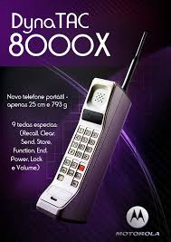

A Xiaomi é uma empresa chinesa, com sede em Pequim, fundada em 2010 por Lei Jun. A companhia desenvolve hardwares, softwares e serviços de internet. Com seus produtos presentes em mais de 80 países e regiões, a marca se destaca na fabricação de smartphones e tem grande expressividade, principalmente, no mercado asiático.
Além dos smartphone a xaiomi contém na sua lista de produtos roteadores, Smart TVs, set-top-boxes, aparelhos vestíveis, dispositivos inteligentes, entre outros produtos eletrônicos e acessórios.
Em 2015, após cerca de um ano da sua chegada ao Brasil, a empresa deixou de trazer seus lançamentos, dando sinais de que não tinha planos de seguir atuando no país. Sendo assim, a Xiaomi encerrou suas atividades, em território brasileiro, no segundo semestre de 2016. Porém, retornou novamente em 2019, em parceria com o grupo DL, que atua como distribuidor oficial.
A Samsung nasceu na Coreia do Sul em 1938 e se transformou em um dos maiores conglomerados do país e do mundo, com atuação em diversas áreas. Apesar da diversidade dos negócios, ela é mais conhecida globalmente pelos eletrônicos. Fundada por Lee Byung-chul, a empresa teve origens modestas, dedicada à exportação de alimentos. Em poucos anos, a Samsung ampliou os negócios para entrar também em outros setores, incluindo comércio, finanças e têxtil.
A divisão de produtos eletrônicos só surgiu em 1969, com o lançamento de sua primeira TV, ainda em preto e branco. A empresa começou a expansão internacional e ficou conhecida também por eletrodomésticos, como geladeiras e máquinas de lavar.
A partir da década de 2010, a companhia se estabelece como uma das principais marcas do mercado de tecnologia móvel, tornando-se a principal rival da Apple. A disputa gerou um dos processos mais famosos da história da tecnologia, iniciado em 2011 e encerrado apenas em 2018, em que a Samsung foi acusada de infringir patentes referentes ao iPhone e ao iOS em seus celulares.
A Motorola é uma empresa de telecomunicações fundada em 1928, na cidade de Schaumburg, nos Estados Unidos. Muito antes de os celulares existirem, a empresa já era envolvida na área; seu primeiro produto foram eliminadores de bateria, que permitiam que rádios dependentes de pilhas funcionassem na rede elétrica doméstica.
Apesar de ser muito mais antiga, a companhia é lembrada como uma das pioneiras na criação do celular. A empresa demonstrou a tecnologia pela primeira vez em 1973, mas só lançou a tecnologia comercialmente 10 anos depois. O DynaTAC 8000X, aprovado nos Estados Unidos em 1983, é reconhecido como o primeiro telefone móvel do planeta.
Em 2011, as duas operações se separaram após o acúmulo de grandes prejuízos. A divisão deu origem à Motorola Solutions, com logo azul, especializada em infraestrutura, e à Motorola Mobility, com logo vermelho, conhecida até hoje pelos seus smartphones. Pouco tempo depois da separação, em agosto de 2011, o Google anunciou a aquisição da Motorola Mobility por US$ 12,5 bilhões. O negócio foi concluído em maio de 2012.
👽 Desenvolvidos por Henrique Ferreira © 👽